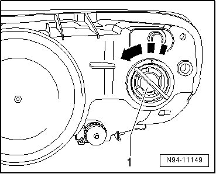
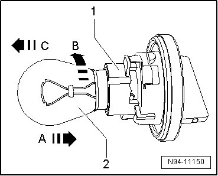

Front Turn Signal Bulb
Halogen Headlamps, from 12.06
Front Turn Signal Bulb
• Left Front Turn Signal Lamp (M7) can be checked via output Diagnostic Test Mode (DTM) of Vehicle Electrical System Control Module (J519) --> [ Vehicle Electrical System Output Diagnostic Test Mode ] Initial Inspection and Diagnostic Overview.
• The illustrations show the procedure for removing and installing the front turn signal bulb in the right headlamp.
• The same procedure is used to remove and install the left front turn signal lamp(M5) and right front turn signal lamp (M7)
• Removing
• Switch off ignition, switch off all electrical consumers and remove ignition key.
• Remove headlamp --> [ Headlamps ] Headlamps
• Rotate the grip piece with the bulb socket - 1 - together with the front turn signal lamp in the - direction of arrow - and remove it from the headlamp housing.

• Press the front turn signal lamp - 2 - in the - direction of arrow C -.

• Turn the front turn signal lamp - 2 - in the - direction of arrow B - at the same time and then pull it out in the - direction of arrow C -.
• Front turn signal lamp: 12V, 21 W
• Installing
• Install in reverse order of removal, noting the following:
CAUTION!
When installing cap, ensure proper seating. It is destroyed by ingress of water into headlamp.
• Do not touch the glass of the light bulb, when installing. Your fingers will leave traces of grease on the glass which, when the lamp is switched on, will evaporate and cloud the glass.
• Check headlamp for function.
• Check and adjust headlamp aim if necessary.